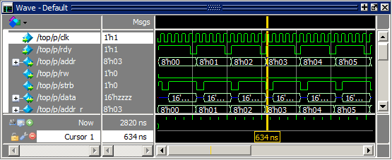

Setting the Timeline to Count Clock Cycles
You can set the
timeline of the Wave window to count clock cycles rather than elapsed
time.
Procedure
- Enter the period of your clock
in the Grid Period field and select “Display grid period count (cycle
count)” (Figure 1).Figure 1. Grid and Timeline Tab of Wave Window Preferences Dialog Box

Results
The timeline will now show the number of clock cycles, as shown in Figure 2.
Figure 2. Clock Cycles in Timeline
of Wave Window
